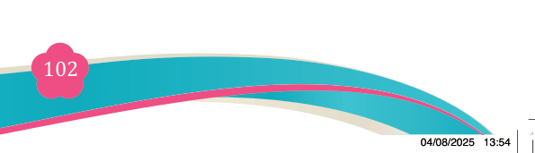
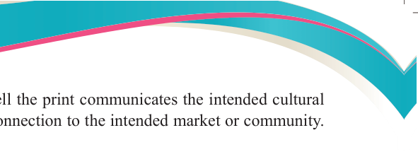
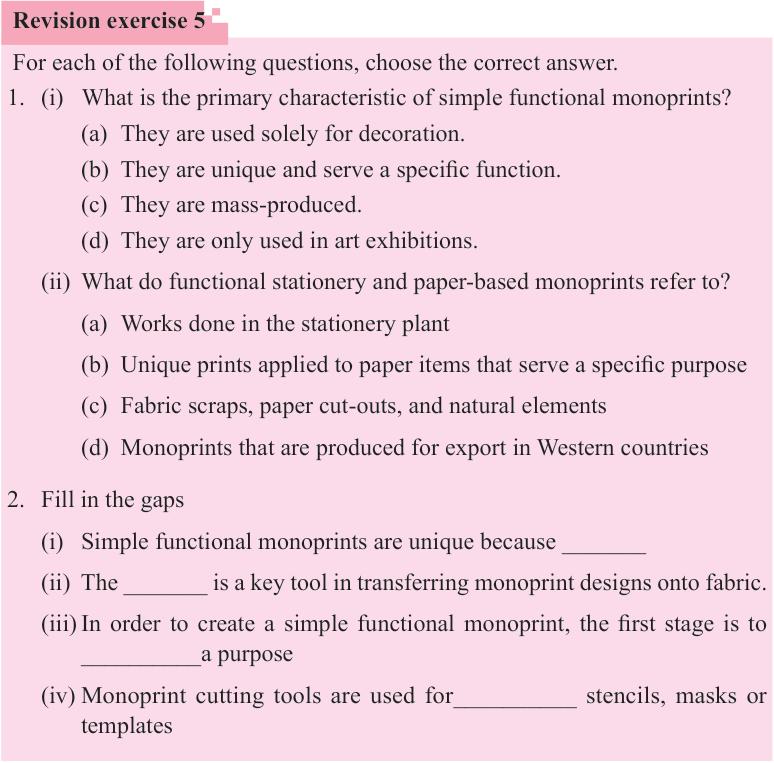

Fine Art for Secondary Schools

102

Student’s Book Form Two


analysis might focus on how well the print communicates the intended cultural or functional message, and its connection to the intended market or community.
Key questions include:

(i) How does the monoprint align with the cultural or social context in which it will be used?
(ii) Does the design reflect the values, identity, or traditions of the target audience or community?
(iii) Is the monoprint appropriate for the intended market, considering factors like trends, cultural significance, and consumer preferences?
Revision exercise 5
For each of the following questions, choose the correct answer.
1. (i) What is the primary characteristic of simple functional monoprints?
(a) They are used solely for decoration.
(b) They are unique and serve a specific function.
(c) They are mass-produced.
(d) They are only used in art exhibitions.
(ii) What do functional stationery and paper-based monoprints refer to?
(a) Works done in the stationery plant
(b) Unique prints applied to paper items that serve a specific purpose
(c) Fabric scraps, paper cut-outs, and natural elements
(d) Monoprints that are produced for export in Western countries
2. Fill in the gaps
(i) Simple functional monoprints are unique because _______
(ii) The _______ is a key tool in transferring monoprint designs onto fabric.
(iii) In order to create a simple functional monoprint, the first stage is to
__________a purpose
(iv) Monoprint cutting tools are used for__________ stencils, masks or templates
04/08/2025 13:54